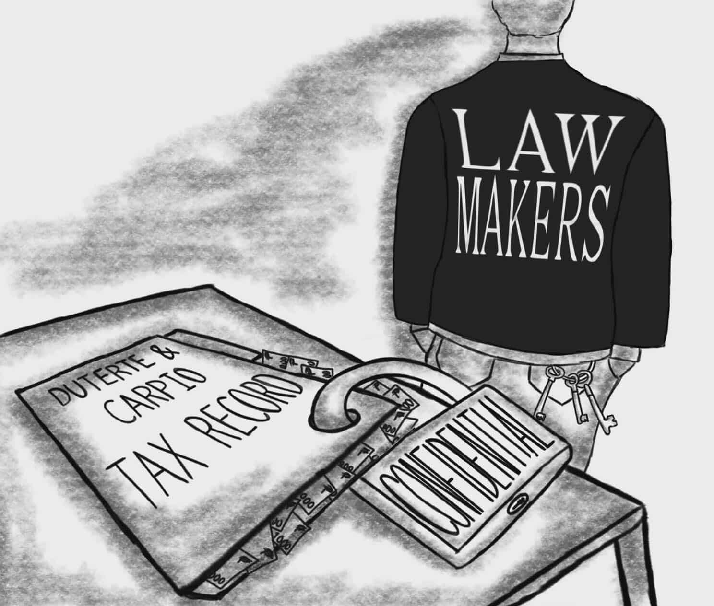
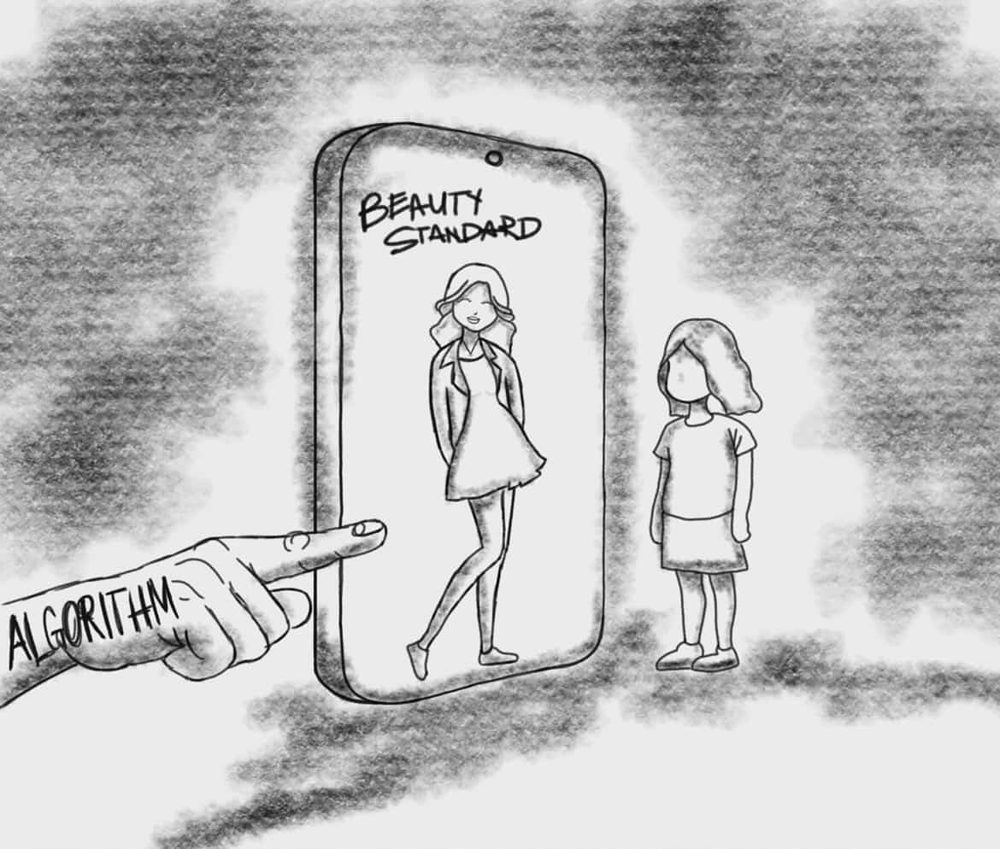
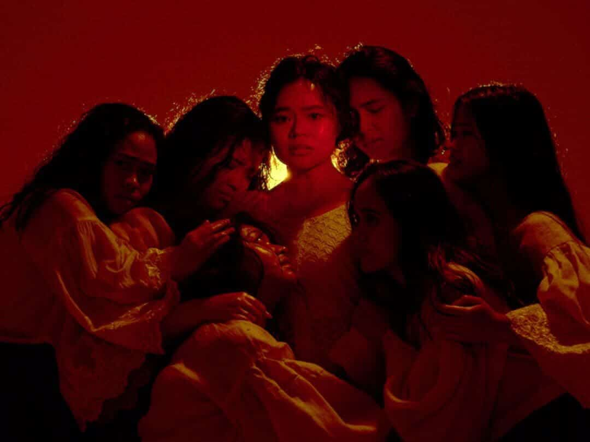
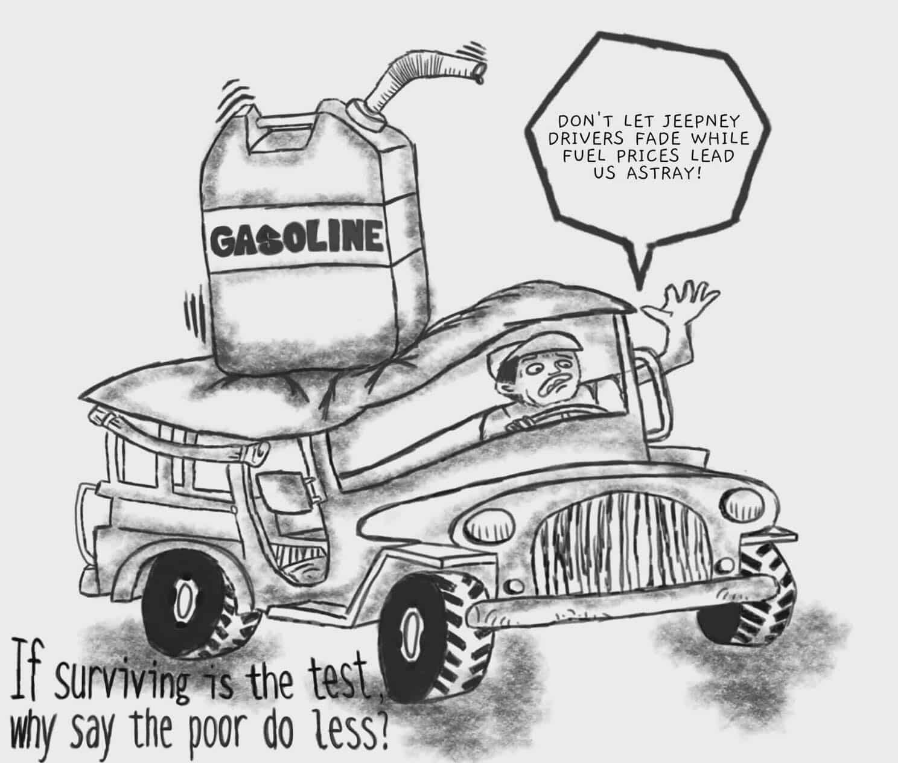

Fuel Crisis Pushes Colleges Online
By Eircelle Mier B. Carreras and Francesca Shanel L. Mabborang
Read moreBy Eircelle Mier B. Carreras and Francesca Shanel L. Mabborang
The Commission on Higher Education (CHED) allowed colleges and universities nationwide to shift from Face to Face or Hybrid to 100% online learning as the Philippines tackle its share of issues with the global fuel and energy crisis.
Read more
By Ace Anthony C. Valenzuela and Ma. Elvira Ashtine Polinag
On April 29 2026, the House Committee on Justice voted to maintain the confidentiality of the Bureau of Internal Revenue (BIR) tax records of Vice President Sara Duterte and her husband during an impeachment trial inquiry.
Read more
By Janayah Ysabel C. Santos
I used to think my personality was something I discovered on my own. A favorite song felt personal. A fashion trend felt chosen. Then one night, while scrolling endlessly at 2 a.m., I realized something unsettling, the algorithm already knew who I was becoming before I did.
Read more
By Karl Josef Santos
'Gregoria Lakambini: A Pinay Pop Musical' is Tanghalang Pilipino's latest offering featuring a seven-piece, all-women ensemble that tackles the inspiring story of the nation's "Mother of the Katipunan."
Read moreBy Jonnalyn R. Subido
Across many Filipino communities, tambayans have long served as informal gathering spaces where people meet out of habit, comfort, and the need to connect.
Read moreBy Annika E. Garcia
The decision of the Commission on Higher Education to allow schools to shift to 100% online classes shows how serious the fuel crisis is today. It aims to help students and professors deal with rising transportation costs, but it also brings back old problems from online learning, problems we've already dealt with before.
Read more
By Katrina Therese V. Gorayeb
For many Filipinos, the COVID-19 pandemic was the hardest economic survival. However, today, jeepney drivers are greatly affected by the Middle East conflict, causing a price increase in diesel, goods, and services. The global conflicts led the jeepney drivers to struggle, even calling it worse than the pandemic.
Read moreBy Katrina Therese V. Gorayeb
For many Filipinos, the COVID-19 pandemic was the hardest economic survival. However, today, jeepney drivers are greatly affected by the Middle East conflict, causing a price increase in diesel, goods, and services. The global conflicts led the jeepney drivers to struggle, even calling it worse than the pandemic. Their struggles have deeply affected many citizens, both online and in real life, as drivers continue to plead for help and urgent action to ease their burden.
According to a GMA News report, many drivers face a painful dilemma between continuing to drive for 12 to 14 hours only to earn ₱250 to ₱300 a day, or stop working and lose income completely. According to the jeepney drivers, diesel expenses consume nearly everything they earn, leaving only enough to feed their families for a day and have no savings at all.
When the people who keep the country moving can no longer afford to move themselves, everyone suffers. Jeepney drivers should not choose between hunger and hard labor. Without fair fuel policies, subsidies, and fare adjustments, livelihoods suffer—leaving concerned citizens to offer what help they can.
Jeepney drivers serve an important role in Filipinos' everyday life, especially for commuters. They help students, workers, and citizens get to where they need to be. Despite this, they remain among the most financially vulnerable workers in our country. Although the government has already offered assistance, many jeepney drivers say it remains limited and does not fully address their long-term needs and concerns.
By Janayah Ysabel C. Santos
I used to think my personality was something I discovered on my own. A favorite song felt personal. A fashion trend felt chosen. Even the memes I laughed at felt like proof that I was becoming someone unique. Then one night, while scrolling endlessly at 2 a.m., I realized something unsettling, the algorithm already knew who I was becoming before I did.
It noticed every pause, every replay, every late-night search I thought no one saw. Slowly, my feed became a mirror that reflected not only my interests, but also my insecurities, desires, and fears. One video about productivity turned into an obsession with hustling. One sad playlist became weeks of romanticizing loneliness. The algorithm did not force me to change. It simply learned how to guide me quietly, almost gently, toward versions of myself I did not question anymore.
The strangest part is how comforting it feels. In a world where people misunderstand each other constantly, the algorithm feels attentive. It knows what makes us stay, what makes us angry, what makes us dream. But somewhere between convenience and connection, identity becomes curated instead of discovered.
Maybe that is the real danger, not that technology watches us, but that eventually, we begin watching ourselves through its eyes. Some days I wonder how much of me is untouched by recommendation pages and curated timelines. Maybe growing up means carrying fingerprints left by machines, shaping our tastes so subtly that we mistake prediction for personality itself.
By Karl Josef Santos
via Tanghalang Pilipino
'Gregoria Lakambini: A Pinay Pop Musical' is Tanghalang Pilipino's latest and freshest offering from their 39th season line-up, 'TP39: IGNITE.' The musical features a seven-piece, all-women ensemble that tackles the inspiring and heartwarming story of the nation's "Mother of the Katipunan," Gregoria "Oryang" De Jesús. Having its initial run at the CCP Tanghalang Ignacio Gimenez from November to December of last year; Tanghalang Pilipino had reprised the musical for a special, one-weekend staging at the Hyundai Hall, Areté, Quezon City.
As an usher at the CCP, I was able to catch a glimpse of the show from time-to-time, and during those small glimpses, I was mesmerized and captivated by the bold-yet-charming premise of the story. So, I made a pact with myself that if there's a re-run, I would be seated.
I finally saw the musical last April 12, this time as an audience member. Despite being seated at the balcony, It felt like I was seated in the front seat with how the ensemble was able to bring an eclectic energy even to the farthest seats, especially during the songs: "Saya't Alampay" and "Bon Appétit, Heneral;" which made the whole theater into ablaze with laughter when the ensemble did Budots. Though the musical doesn't only showcase a humorous side, the ensemble were also able to pull our heartstrings and put us into tears.
via Paul Islanan
Overall, 'Gregoria Lakambini' has become my favorite musical ever, and limiting my experience and admiration into 250-words serves injustice to the production. With Tanghalang Pilipino teasing its 40th season, it seems like the musical will be having its month-long re-run again—which I hope that many people can also watch and witness HERstory.
"Hindi pa tapos ang aking kwento."
By Jonnalyn R. Subido
I still remember how it usually began, without anyone deciding it was time. As the sun dipped low and cast a soft orange glow, familiar spots around the neighborhood slowly filled, a bench by a sari-sari store, a quiet corner, the steps outside a school, and sometimes a rooftop.
No invitations. People just came.
That's the thing about tambayans. They don't announce themselves. They simply happen. Across many Filipino communities, these informal gathering spaces have long served as places where people meet, not out of obligation, but out of habit, comfort, and the need to connect.
For us, it was always that rooftop. Climbing up, the noise of the street softened into something lighter. One person would already be there, then another, until the space quietly became ours.
Like many college students, we were trying to keep up with everything, assignments, deadlines, expectations we were still learning to carry. Life moved fast. But in spaces like this, it slowed down. Conversations didn't need structure. A passing comment could turn into laughter, then into shared stories, then into quiet honesty.
Tambayans may look unproductive from the outside, just people sitting around talking, but they often become spaces of release. Here, people check in on each other without formality. Silence isn't awkward. Presence is enough.
Now, as schedules grow tighter and paths begin to separate, these gatherings take different forms, group chats, late-night calls, quick meetups when time allows. Still, the essence remains.
Because a tambayan is never just a place. It's a pause in the middle of everything, a space where, even briefly, life doesn't need to be solved, only shared.
By Eircelle Mier B. Carreras and Francesca Shanel L. Mabborang
MANILA, Philippines — The Commission on Higher Education (CHED) allowed colleges and universities nationwide to shift from Face to Face or Hybrid to 100% online learning as the Philippines tackle its share of issues with the global fuel and energy crisis, confirmed by officials.
CHED Chairperson Shirley Agrupis announced that the policy grants colleges "full flexibility" to determine whether they can fully transition back to online classes depending on their tech and faculty capabilities. (1)
The move comes as a temporary measure to address rising transportation and energy costs that has brought major struggles to students throughout the country. "We are giving full flexibility… depending on their perceived readiness to offer the pure online," Agrupis said. (1)
Previously, CHED regulations limited online learning to hybrid modalities, still making a significant portion of classes face-to-face. The new directive eases these requirements and allows institutions to adopt fully online learning during the issue being faced. (1)
The policy is due to the government wide efforts following the declaration of a national energy emergency by President Ferdinand Marcos Jr..(2)
Stakeholders have expressed mixed reactions. Some lawmakers such as Senator Pia Cayetano, warn that prolonged online learning could affect the educational outcomes of students. (3)
CHED states that while institutions are free to adopt 100% online modalities during the crisis, they must ensure that academic standards are not affected by it. (1)
Further adjustments are likely, depending on the stability of the country's fuel reserves and status of the economy.
By Ace Anthony C. Valenzuela and Ma. Elvira Ashtine Polinag
On April 29 2026, the House Committee on Justice voted to maintain the confidentiality of the Bureau of Internal Revenue (BIR) tax records of Vice President Sara Duterte and her husband, Manases Carpio, during an impeachment trial inquiry against them for having suspicious transaction records. (1)
Following an Anti-Money Laundering Council (AMLC) report flagging ₱6.77 billion in suspicious transactions from 2006 to 2025, lawmakers are examining whether Duterte's and Carpio's declared assets match their financial disclosures, including their Statement of Assets, Liabilities, and Net Worths (SALNs), income tax returns (ITRs), and other corporate and banking records. (1)
However, during the April 29 hearing, the committee voted 38-6 to keep the couples tax records sealed, following BIR guidance that tax documents requested by the congress should only be examined in an executive session or during an impeachment trial. (2)
Some lawmakers, Leila de Lima and Lorenz Defensor, believe that a constitutional power exists for the committee, while others such as Joel Chua and Chel Diokno, want the committee to establish probable cause first, and thus would not permit the committee to access the subpoenaed tax records at this time. (2)
As of May 7 2026, the Quezon City Regional Trial Court dismissed a petition filed by Carpio seeking to block the House committee from obtaining tax and financial records. (3)
Tinta't Tinig Maynila: Ink, Stories, and Voices of Manila
A publication that serves as both ink and voice for the stories of Manila, through its printed pages and the spoken word of its articles. That establishes a platform for multiple voices to express themselves through its combination of journalism and literature and artistic works which together create a communal storytelling experience that reflects the city's identity and its inhabitants.
UNIVERSITY: PAMANTASAN NG LUNGSOD NG MAYNILA
COLLEGE: College of Humanities, Arts and Social Sciences (CHASS)
DEPARTMENT: Department of Mass Communication (DMC)
COURSE: BAC 2201 - Journalism Principles and Practices
CLASS: BAC 2 - 1, Group No. 1
FACULTY-IN-CHARGE: MR. GEORGE C. ARCENO
YEAR: 2026
Carreras, Eircelle Mier B.
Garcia, Annika E.
Gorayeb, Katrina Therese V.
Mabborang, Francesca Shanel L.
Polinag, Ma. Elvira Ashtine
Santos, Janayah Ysabel C.
Santos, Karl Josef A.
Subido, Jonnalyn R.
Valenzuela, Ace Anthony C.
By Annika E. Garcia
The decision of the Commission on Higher Education to allow schools to shift to 100% online classes shows how serious the fuel crisis is today. It aims to help students and professors deal with rising transportation costs, but it also brings back old problems from online learning, problems we've already dealt with before.
Now that schools can temporarily shift fully online during the fuel shortage. While this offers flexibility and helps commuters save money, especially for those with homes ten kilometers away, it's not all sunshine and rainbows, more like solar flares and pure unfiltered heat.
The shift driven by factors like extreme weather, rising fares, and global conflicts affect oil prices that even everyday goods feel it. Online learning starts to look appealing, but many students still struggle with poor internet, expensive data, lack of devices, and unsuitable study spaces. For underprivileged students, this setup can be especially unfair.
While helpful in the short term, it exposes gaps in digital education. Courses like medicine, engineering, and art fields require hands-on training, labs, and real interaction, things you can't exactly download at home. Not to mention, on-the-job training becomes nearly impossible. The same issues from the pandemic are still here, making it feel like we're just caught in the crossfire.
Overall, online classes may be practical for now, but they shouldn't be the only solution. Schools and the government must ensure fair support for all, because education should remain accessible, balanced, and real, not just convenient.